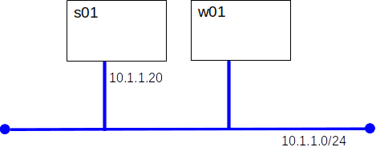

The TOTP (Time-Based One-Time Password) algorithm is defined in RFC 6238. We will use open source implementations. Onetime passwords will be generated with oathtool and validated by the PAM module pam_oath.
The initiative is driven by the "Initiative for Open Authentication"(OATH), and industry group.
For best results s01 should be a Debian 12 server with two users: root and alice. Your instructor can supply a suitable VM.
apt update apt install libpam-oath
apt update apt install oathtool
OATH TOTP relies on shared secrets. We will create one for alice. Alice will need this secret to generate passwords.
openssl rand -hex 10 ................................. 12345678909876543210
HOTP/T30/6 alice - 12345678909876543210
auth required pam_oath.so usersfile=/etc/users.oath window=30 digits=6
oathtool -v --totp -d 6 12345678909876543210
Note: This section is optional
The oathtool command is useful for testing, but a dedicated authenticator application should do a better job of keeping our secret safe. These steps have been tested with the Microsoft Authentictor app on iOS.
# relace DK2DEFASV26A==== with alice's Base32 secret qrencode -t UTF8 'otpauth://totp/alice@s01?secret=DK2DEFASV26A===='note: the base 32 encoded secret is displayed when you generate a password with oathtool
auth required pam_oath.so usersfile=/etc/users.oath window=30 digits=6
KbdInteractiveAuthentication yes UsePAM yes
Demonstrate your work to you instructor.
# /etc/ssh/sshd_config AuthenticationMethods publickey,keyboard-interactive:pam KbdInteractiveAuthentication yes PasswordAuthentication yes